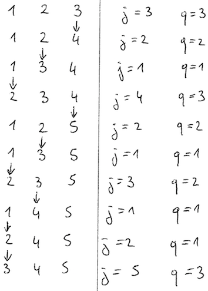

Une campagne du gouvernement prône de manger cinq fruits et légumes par jour. Nous allons vous y aider !
Une fonctionnalité intéressante en python est la possibilité de programmer des générateurs.
Un générateur est comme une fonction mais il utilise yield à la place de return afin
de produire une séquence de valeurs. Il est possible d'itérer sur cette séquence, il est possible
d'en obtenir la prochaine en utilisant next().
L'instruction yield suspend temporairement la fonction et retourne une valeur. Lorsque
la fonction next est appelée, l'exécution de la fonction reprend.
Voici un exemple simple :
def cube(max): x = 1 while x<max: yield x*x*x x += 1 gen = cube(5) print(next(gen)) # >>> 1 print(next(gen)) # >>> 8 print(next(gen)) # >>> 27 newgen = cube(10) for v in newgen: print(v) #affiche successivement 1, 8, 27, 64, 125, 216, 343, 512, 729
Remarque: lorsqu'il n'y a plus d'élément à produire, un exception
StopIteration est levée.
Soit S un ensemble de n éléments dont on souhaite énumérer tous les sous-ensembles
de taille k.
Notons 1, 2, ..., n les indices des n éléments de S.
L'algorithme suivant énumère les indices des éléments appartenant à chacun des ensembles de taille k.
Le premier ensemble d'indices à retourner est I = [1,2, ..., k] Tant que Vrai: Soit j plus petit élément de I tel que j+1 n'appartienne pas à I. Si j=n alors STOP: il n'y a plus d'ensemble à produire Sinon Soit q l'indice de l'élément j dans I. Remplacer I[q] par j+1 Pour p de 1 à q-1: remplacer I[p] par p Retourner l'ensemble d'indices I
Voici une trace de cet algorithme pour l'énumération de tous les sous-ensembles à 3 éléments
de [1,2,3,4,5].

Remarque: n'oubliez pas que les listes sont indicées de 0 à n-1 en Python.
Une implémentation de l'algorithme précédent demande donc quelques adaptations.
GenerateSubsets(S,k) qui implémente en Python l'algorithme précédent.
createDict(n) retourne un couple (S,dictS). La liste S contient n fruits ou légumes.
Le dictionnaire dictS contient un attribut (calories, prix) pour chacun des éléments de S.
Pour n=25 et k=5, trouvez les 5 fruits et légumes qui offrent le meilleur rapport somme des calories/somme des prix
(où la somme est prise sur les k=5 fruits et légumes).
Pour vérifier que votre résultat est correct, vous pouvez utiliser la fonction check(dS,k)
qui attend en paramètre le dictionnaire retournée par createDict(n) et une valeur pour k (par exemple k=5)
et qui retourne un couple (nb, val) où nb est le nombre de sous-ensembles de taille k et val est la
valeur du meilleur rapport somme des calories/somme des prix
(où la somme est prise sur les k fruits et légumes).